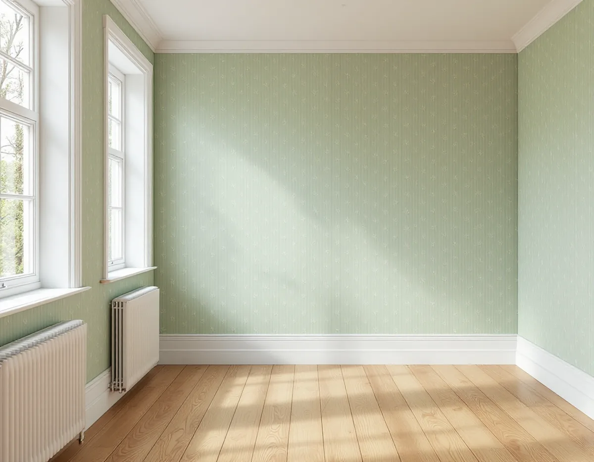
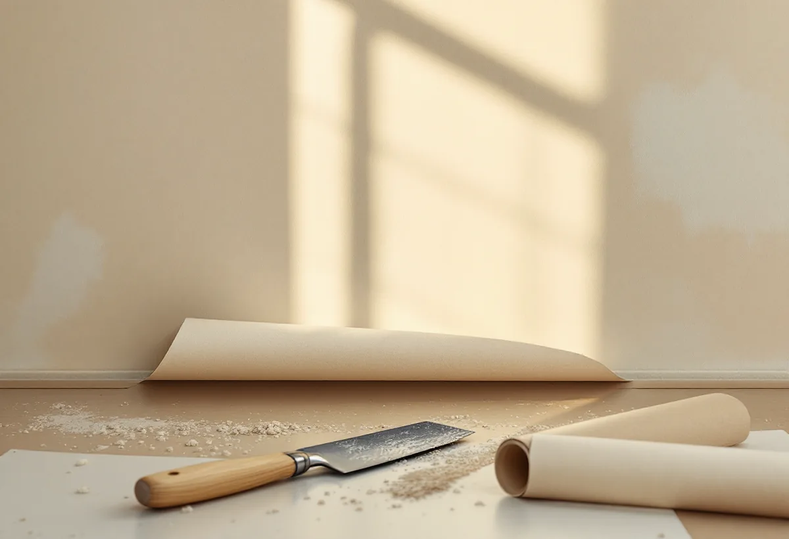

Platsbesök
Vi lyfter en kant och ser om väggen är skiva, papp, puts eller gips, och hur många lager som sitter på den.
En villa i Tullinge från 1920-talet och ett radhus i Fittja från 1970-talet kan ha helt olika väggar under tapeten. I den ena kan det sitta träfiberskivor från en tidig renovering, i den andra en strukturtapet av plast. Geal Entreprenad AB tapetserar i villor, radhus och bostadsrätter i Botkyrka, och vi börjar med att ta reda på vad väggen faktiskt består av.

Kommunens kulturmiljöprogram beskriver hur Tullinge järnvägsstation öppnade 1903 och blev starten för villasamhället. På 1920-talet planlades Hamra egnahem söder om järnvägen, och samtidigt kom kataloghusen, monteringsfärdiga enfamiljshus som köptes direkt från en husleverantör. Inom egnahemsområdet dominerar kataloghus från 1920- och 40-talet. Programmet beskriver också hur funkisvillan dominerade under 1930- och 40-talen och hur Folkvillan och Tjänstemannavillan lanserades på 1950-talet.
Norra Botkyrka är ett annat tidsskikt. Vid mitten av 1960-talet upprättades en generalplan för bostäder åt 40 000 nya invånare. Den första inflyttningen skedde hösten 1970, och 1974 var i stort sett alla bostäder klara. I Fittja uppfördes omkring 2 500 bostäder i början av 1970-talet, både höghus, låghus, radhus och villor.
Väggarna under tapeten skiljer sig mellan de här årtiondena, och ett hus kan dessutom ha byggts om flera gånger. Därför lovar vi ingenting om underarbetet innan vi har lyft en kant och sett efter.

I Svenska Byggnadsvårdsföreningens frågespalt finns flera hus där väggarna fick träfiberskivor vid en senare renovering. En frågeställare berättar om ett hus där man på 40–50-talet satte tretexskivor i alla rum utom köket, en annan om ett vardagsrum som renoverades på 50–60-talet och har tre lager tapet på en träfiberskiva. Den sortens vägg kan finnas även i Botkyrka, och den kräver ett eget underarbete.
Ska ny tapet sitta direkt på tretex behövs enligt föreningen en spärrgrund, och då blir det en grundfärg med lösningsmedel; ren linolja är mindre lämplig. Spänner man i stället papp över skivorna, eller sätter ett skivmaterial ovanpå, behövs ingen grundning. Spiken fäster dåligt i tretex, så pappen spikas med lite längre nubb. Föreningen kallar tretex ett bra och miljövänligt material som isolerar utan att ta mycket plats.
I en fråga om gamla masonitskivor rekommenderar föreningen att man klistrar upp vanlig golvtäckpapp, alltså tapetserar med pappen, och sedan tapetserar eller målar på den. Skivorna förlimmas först, och listerna i hörnen tas loss innan pappen sätts upp och tillbaka före tapetseringen. Hål i en tretexvägg lagas med ett gipsbaserat spackel som ges struktur så att det smälter in, och skarvar där en gammal tapet släppt limmas med våtrumslim.
Kulturen i Lund skriver att den första vinyltapeten i Sverige tillverkades redan 1959 men att vinyltapeterna slog igenom på allvar först på 1970-talet. Ytan av pvc-plast gjorde tapeten lättskött och hållbar. Inför ny tapet är den första frågan därför vad som ska hända med plastytan.
Byggnadsvårdsföreningen skriver att strukturtapeterna oftast var flossbara: det yttersta skiktet går att dra loss, och då blir ytan slätare att arbeta med. En spaltbar tapet kan delas så att den blanka eller strukturerade ytan försvinner, och det inre lagret är sedan ett utmärkt underlag efter eventuell spackling. Lagret måste förstås sitta ordentligt. Blåsor som syns när det blir fuktigt brukar enligt föreningen sträcka upp sig när det torkar.
Om huset hålls uppvärmt året runt kan plasttapeten enligt föreningen i princip sitta kvar under till exempel renoveringsgips, även om man gärna undviker plast i äldre hus. Ett annat alternativ är att spänna papp över väggen. Gäller frågan i stället fasaden finns det mer under målare i Botkyrka.
Vid platsbesöket börjar vi i ett hörn eller bakom ett element, där det syns minst. Vi lyfter en kant och ser om det sitter skivor, papp, puts eller gips under, och hur många lager tapet som ligger ovanpå. Ger väggen efter när vi trycker på den, eller låter den ihålig, kan det vara en skiva. Vi drar i ytskiktet för att se om det delar sig och prövar om det understa lagret sitter fast.
Därefter väljer vi underlag tillsammans med dig: spärrgrund, papp eller att ta ner lagren. Det avgör både hur lång tid arbetet tar och vilken tapet som fungerar, och det står var för sig i kostnadsförslaget.
Vi lyfter en kant och ser om väggen är skiva, papp, puts eller gips, och hur många lager som sitter på den.
Spärrgrund, spänd eller klistrad papp eller att lagren tas ner – vi går igenom vad som passar väggen.
Nedtagning, underlag och uppsättning redovisas som egna poster.
Ytskikt delas bort, hål lagas och skivor förlimmas eller grundas.
Tapeten sätts upp våd för våd med passning av mönstret.
Vi går igenom väggarna med dig och lämnar överbliven tapet för lagningar.
Skatteverket räknar tapetsering som rotarbete i småhus, bostadsrätt och ägarlägenhet. I en bostadsrätt gäller avdraget arbete innanför bostadens tak, väggar och golv.
Avdraget är 30 procent av arbetskostnaden, högst 50 000 kr per person och år och högst 75 000 kr tillsammans med rutavdrag. Material som tapet, papp och klister ger inget avdrag, och inte heller resor. Geal drar avdraget direkt på fakturan.
Vilket underlag väggen har, om gamla ytskikt ska delas eller tas ner och om väggen behöver papp väger tyngst. Efter ett gratis platsbesök får du ett skriftligt kostnadsförslag.
Fasad, fönster och invändig målning.
Målare i Stockholm →Takbyte, takbesiktning och plåtarbeten.
Takläggare i Botkyrka →Tullinge, Uttran och Tumba.
Takrenovering i Botkyrka →Flytt av badrum, stammar och frånluft.
Badrumsrenovering i Botkyrka →Nytt hus, utfart och byggarbetsplats.
Byggföretag i Botkyrka →Fönstertyper per epok i Botkyrkas villor.
Fönsterbyte i Botkyrka →Kataloghus, källargolv och trägolv.
Golvläggare i Botkyrka →Kök i villor och radhus, för att bo kvar.
Köksrenovering i Botkyrka →Tidstypiska kulörer från 1960-tal till gamla byar.
Målare i Botkyrka →Rännor, stuprör och plåttak i Botkyrka.
Plåtslagare i Botkyrka →Altan, plank och förråd i villaområdena vid järnvägen.
Snickare i Botkyrka →